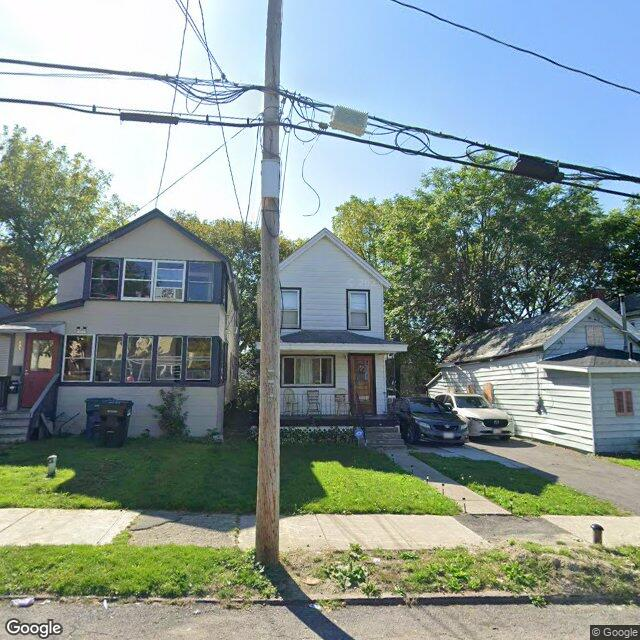

2026-07-11T02:11:09+00:00
611 Second North St
The image shows multiple two-story residential structures with light-colored siding and front porches, partially obscured by a central utility pole.
Vacant properties: 1 matching recordRental registry: 6 matching recordsNeeds human review
Open entry